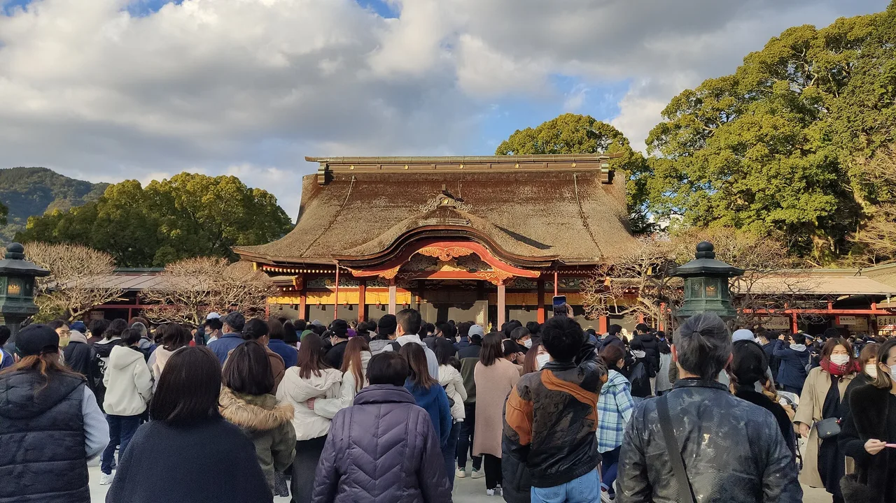

Fukuoka 旅遊指南（為日語學習者撰寫）
重點
福岡是九州最大和最充滿活力的都道府縣，因Hakata拉麵、沿Hakata灣的lively yatai（露天美食攤位）以及作為距南韓短途渡輪的亞洲門戶而聞名。它融合了繁華的現代城市與城鎮和easy day-trip島嶼。
📍 必看: Dazaifu Tenmangu Shrine · 🥢 必嚐: Hakata Ramen (tonkotsu) · 來源
九州的門戶城市，以豚骨拉麵和街頭美食攤檔聞名。

🍜 美食 ▰▰▰▱▱ 🏯 文化 ▰▰▰▰▱ 🏙 城市 ▰▰▰▰▰ 🚄 交通 ▰▰▰▱▱ 🌿 自然 ▰▰▱▱▱
🥢 必嚐: Hakata Ramen (tonkotsu) · 📍 必看: Dazaifu Tenmangu Shrine
🗣 ちょっと寄ってみます chotto yotte mimasu
福岡是九州最大、最友善的城市——靠近韓國、河邊林立著屋台美食攤檔，是探索整個九州的絕佳基地。
必看景點
★ Dazaifu Tenmangu Shrine★ Kushida Shrine💎 Nanzoin Temple Reclining Buddha (Sasaguri)💎 Nokonoshima Island Park
- 河邊的屋台（街頭美食攤檔）
- 大濠公園和福岡城遺跡
- 太宰府天滿宮神社
- 運河城購物中心
必吃美食
★ Hakata Ramen (tonkotsu)★ Motsunabe (offal hot pot)💎 Hakata Udon (gobo-ten udon)💎 Yanagawa Unagi no Seiro-mushi (steamed eel over rice)
博多豚骨拉麵和明太子（辛辣鱈魚卵）。
如何前往與最佳季節
如何前往: 福岡（博多）距離東京新幹線約5小時，或飛行約2小時。
最佳季節: 全年開放；屋台攤檔在溫暖的夜晚最熱鬧。
學個日語
おいしいです！
Oishii desu! — "露天美食攤檔——福岡的特色機構"
在地詞彙
屋台
yatai — 露天美食攤檔——福岡的特色機構
💡 小提醒
晚上在中洲河邊的屋台用餐——指著菜單點餐；座位有限。
資料來源: Japan National Tourism Organization (JNTO).
事實依官方旅遊資訊查核，觀點為我們所有。